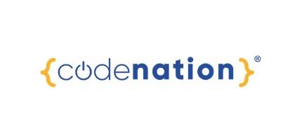

Believe in yourself. Be persistent, consistent and determined.
I started my coding journey with code nation 5th July 2021, the first course I did where a Level 2 Develop Coding course, I really enjoyed the three learning about Python fundmentals and working in a team to build a python text based game.
Then I did a 12 week Master coding course again with code nation, this gave me so many new skills and introudction to both frontend and backend. In the 12 weeks, learnt about JavaScript fundmentals, React, and then went on to learn about the backend working with databases, I learnt MongoDB, mongoseDB, MySQL and so much more.
Then I completed a Level 2 in Cyber Secuirty and Digital Forensices, within this three week course I learnt about different methods of being hacked and the differernt types of hackers, and the some theories in to why they do what they do and what they can gain from it and also the effects it has on the person(s) and or company.
And I have just completed a Level 3 Innovate coding, again this where using python, but this time it where a recap on python fundmentals and then levling the skills up to learn more about error handing and about casting and so much more. Also I learnt about using Flask has a backend in Python. I used Flask to build a backend for a project and then frontend technologies, html, css, bootstrap, JavaScript events, media queries. In my project I even used css grid and tables.